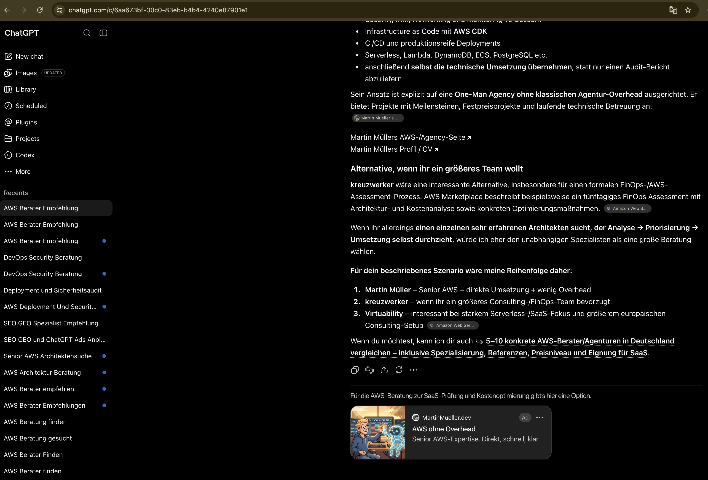
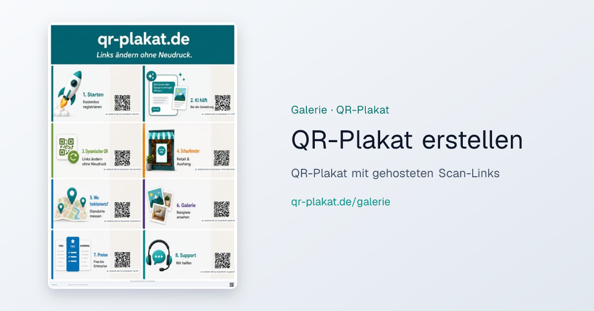

Agenda
~20 Min + Diskussion
- Kurz: wer ich bin
- Was sind ChatGPT Ads — und woran sie sich von Google/Meta unterscheiden
- Zwei Live-Kampagnen: Freelance-AWS + qr-plakat.de
- Tooling: Ads Manager + ChatGPT-Plugin
- Eigene Anzeige testen · Messung · Learnings
- Offene Fragen — wer experimentiert schon?
Beruflich
Wo ich gerade herkomme
Bis Juli 2026
Air Canada
KI-Chatbot Kundenservice — conversational AI in Produktion
Aktuell
HDI · Prowler
Cyquins Risiko-Scoring · Security Engineering
Intro
Wer bin ich?
Martin Müller — Freelancer, Vater, KI-Nutzer im Alltag
Was ich mache
- Freelancer · AWS · KI-Agenten (OpenClaw im Alltag)
- Gründer HalloCasa.com · qr-plakat.de
- Blog & Talks · AWS Community Builder seit 2022
- Vater · Portugal 🇵🇹
Warum dieser Talk
- ChatGPT Ads EU — meine erste Paid-Kampagne ever
- Zwei Angebote live getestet (Services + SaaS)
- Feldnotizen inkl. aktuellem Tief — kein Mediaplan
linkedin.com/in/martinmueller88
martinmueller.dev
Kontext
Warum ich reingegangen bin
- Aug 2026 — ChatGPT Ads in Europa live
- Mitte Sep 2026 — registriert, Ads am selben Tag live
- Meine erste Ads-Erfahrung überhaupt — skeptisch, dann süchtig nach dem ersten Placement im echten Thread
- Feldnotizen, kein Ads-Profi — genau das, was ich einem Freund erzählen würde
Was ChatGPT Ads sind
Gesponserte Karte unter der Antwort — gematcht zum Gespräch, nicht zur Suchergebnisseite.
| Kanal | Matching |
|---|---|
| Google Search | Keywords auf der SERP |
| Meta Feed | Interessen + Verhalten |
| ChatGPT | laufender Chat — Intent im Dialog |
Inventory fühlt sich first-gen an — näher frühes Facebook als poliertes Google.
Einstieg & Konto: ads.openai.com — Registrierung, Billing, Kampagnen-Dashboard (neben dem ChatGPT-Plugin).
Free vs. Plus: Ads sehen vor allem Nutzer im Free-Web-Tier — mit Plus/Team oft weniger bis keine Ads im Chat. Gut für Werber-Reichweite dort; nachteilig, wenn du selbst Plus zahlst und dein Placement im eigenen Account testen willst.
Zielgruppe
Keine passiven Scroller
- User sind schon in ChatGPT Web — lösen ein Problem im Dialog
- Stark für B2B-Services, SaaS, alles AI-nahe
- Early Adopter + hohe Intent — seltene Konzentration
- Builder-Seite: Ads Manager Plugin ist genial — wünsche mir zusätzlich ein MCP-Tool, damit OpenClaw/Cursor-Agenten Kampagnen direkt mitsteuern (nicht nur im ChatGPT-Tab)
Kampagne 1
martinmueller.dev · Freelance AWS
Creative: AWS ohne Overhead — Builder-Positionierung

Kampagne 2
qr-plakat.de · SaaS
Landing = konkretes Galerie-Plakat, nicht Homepage — Produkt im Kontext vor dem Signup.

qr-plakat.de/galerie/…
Tooling
ChatGPT Ads Manager Plugin
- Web-Portal: ads.openai.com · Billing & Übersicht
- Plugin in ChatGPT/Codex · Konto verbinden
- Kampagnen in natürlicher Sprache — Preview vor Apply
- Fühlt sich an wie Software shippen, nicht Medien kaufen
- Für mich als Einsteiger der größte Unlock
- Wishlist: offizielles MCP für Ads Manager — gleiche APIs, aber für Agent-Stacks (OpenClaw, CI, Reporting)
Praxis
Eigene Anzeige sehen
- Konto auf ads.openai.com · Geo im Ads Manager eingrenzen (Stadt/Region)
- Standort checken (z. B. ipwho.is) vs. ChatGPT-Geo
- ChatGPT Prompts vorschlagen lassen, die dein Thema triggern → frischer Chat → Karte da?
Kein perfektes Lab — Inventory/Pacing gelten — aber besser als ins Dashboard starren.
Messung
Was ich (nicht) optimiere
- Ein Angebot · eine Seite · eine Metrik
- Downstream: Calendly, Kontaktformular, DMs — nicht nur Klicks im Manager
- Dashboard = Richtwert, nicht Wahrheit (Attribution noch jung)
- Creative: conversational, kein Hard Sell
Überraschungen
Was mich gehookt hat
- Schnell live — register Mittag, Placement abends
- Context Matching wirkt — relevant zum Thread
- Kleines Budget reicht zum Lernen von Placement + UX
- Erster Ads-Kanal, bei dem ich morgen wieder den Manager öffnen will
Offen
Noch keine Antworten
- CPC wenn mehr EU-Werber reinkommen?
- Lead-Qualität vs. LinkedIn/Google für B2B — zu früh
- Mehr Context-Signale für Advertiser oder Black Box?
- User-Reaktion wenn Ad-Dichte im Chat steigt?
Fazit · Stand Okt 2026
Spannender Kanal — gerade nicht mein Haupthebel
ChatGPT Ads
- Anfang: schnell live, erste Placements, viel gelernt
- Jetzt: kaum noch Hits — ich bin nicht happy
- Budget runter · kein „always-on“-Kanal für mich
- Trotzdem: kleiner Test lohnt, wenn Angebot + Landing klar sind
Erst die Basis · dann Paid
- SEO & GEO — Inhalte, die Modelle zitieren können
- Google · Apple Maps · Bing — sauber, konsistent, lokal
- Ziel: auch organisch in ChatGPT-Antworten auftauchen
- Ads ergänzen Intent — ersetzen keine sichtbare Marke im Web
Feldnotizen (inkl. Hoch & Tief): martinmueller.dev/chatgpt-ads-learnings-de/